Schody na beton
Obłożenie betonowej konstrukcji drewnem: stopnie, podstopnie i cokoły dopasowane do każdego stopnia, także z oświetleniem LED.
Zobacz schody na beton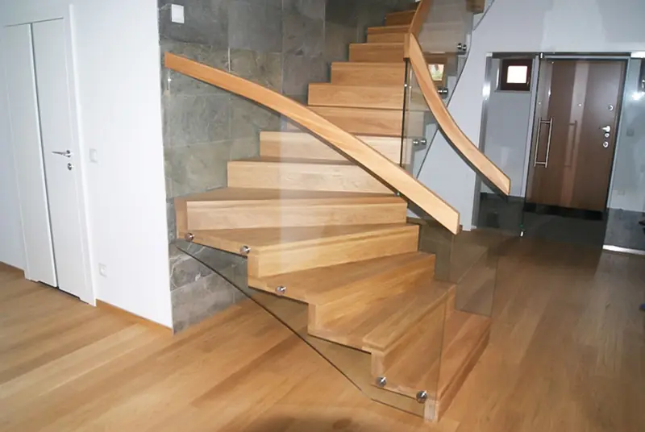
Chocz, Wielkopolska - montaż w całej Polsce i w Niemczech
Obkładamy drewnem schody betonowe, wykonujemy schody dywanowe i podwieszane, z oświetleniem LED i balustradą. Mierzymy u Państwa, projektujemy, produkujemy i montujemy.
Każde schody projektujemy pod konkretne wnętrze. Konstrukcję, gatunek drewna, oświetlenie i balustradę dobieramy razem z Państwem - zdjęcia w kartach można przesuwać palcem lub myszą.
Obłożenie betonowej konstrukcji drewnem: stopnie, podstopnie i cokoły dopasowane do każdego stopnia, także z oświetleniem LED.
Zobacz schody na betonStopnie z drewna prowadzone jak dywan - przy ścianie albo podwieszane pod strop. Lekkie, nowoczesne, z balustradą ze szkła lub stali.
Zobacz schody dywanoweŚwiatło pod każdym stopniem albo oświetlenie kaskadowe, zaplanowane razem ze schodami - wygodne nocą i efektowne w dzień.
Filmy z oświetleniemSzkło, stal cięta laserem, spawana czarna balustrada, relingi, drewniane poręcze i tralki - każdy detal wybierają Państwo sami.
Zobacz detaleWykonujemy też schody policzkowe, bolcowe, siodłane, spiralne i samonośne - z drewna, stali lub ich połączenia.
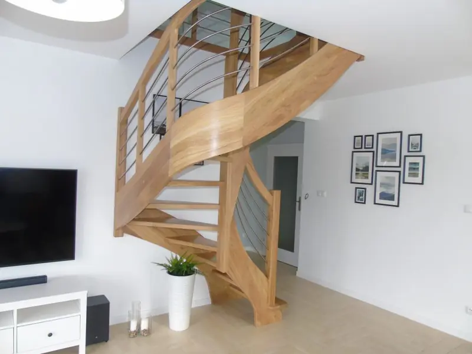
Schody policzkoweSolidność i tradycyjny wygląd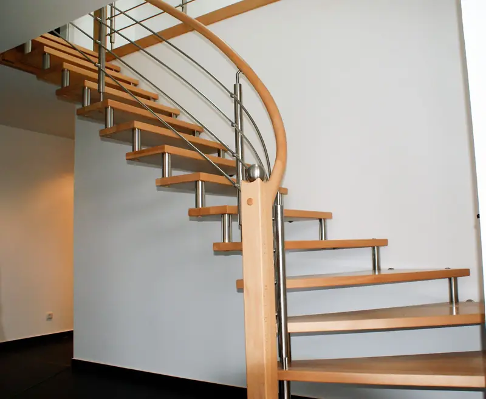
Schody bolcoweLekka konstrukcja na stalowych bolcach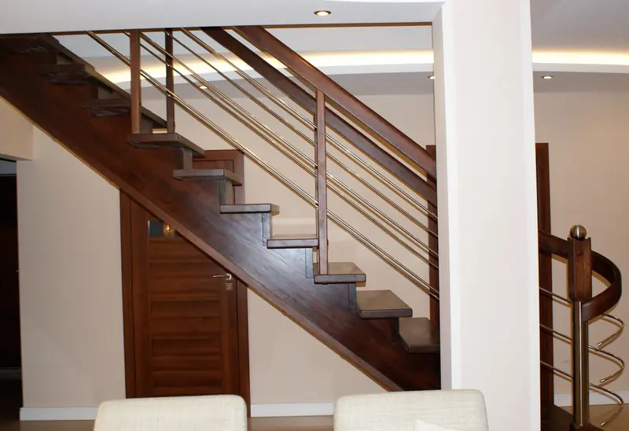
Schody siodłaneWygoda w tradycyjnym wydaniu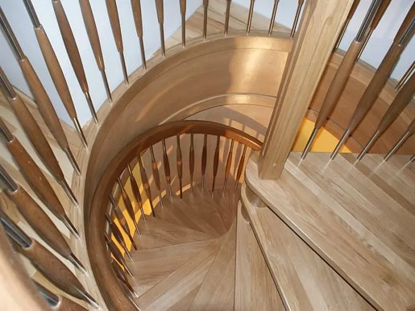
Schody spiralneMało miejsca, dużo charakteru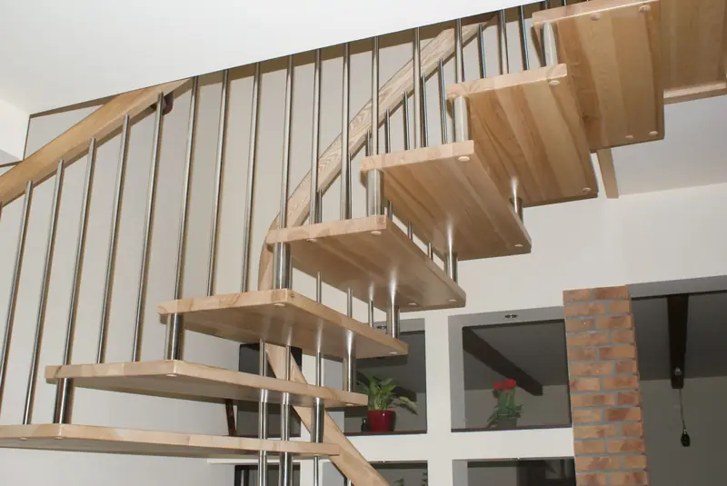
Schody samonośneNa wangach, grzebieniowe, na słupieOświetlenie LED planujemy razem ze schodami: pod każdym stopniem albo kaskadowo. Na nagraniach z naszych realizacji widać to lepiej niż na zdjęciach - film uruchamia się po kliknięciu.
Więcej nagrań: balustrady cięte laserem, spawane i z rurki, schody z podestem.
Wszystkie filmyTak prowadzimy każde zlecenie - od pierwszej rozmowy do ostatniego stopnia. Na każdym etapie rozmawiają Państwo z nami bezpośrednio.
Umów pomiarWybrane schody wykonane u klientów. Przesuń, aby zobaczyć kolejne, kliknij zdjęcie, aby je powiększyć.
Pełna galeria według rodzaju schodów i wszystkie filmy:
Wszystkie realizacjePracujemy na najlepszych gatunkach drewna - przede wszystkim dębie, jesionie i buku - i dbamy, aby zachowały swój naturalny kolor. Rodzaj i odcień drewna wybierają Państwo sami, tak jak każdy detal balustrady.
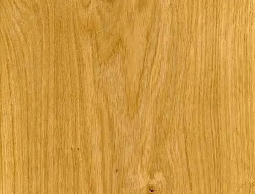
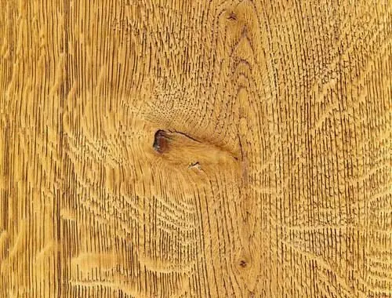
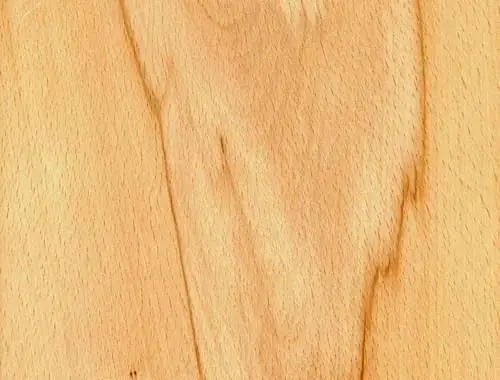
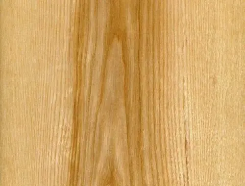
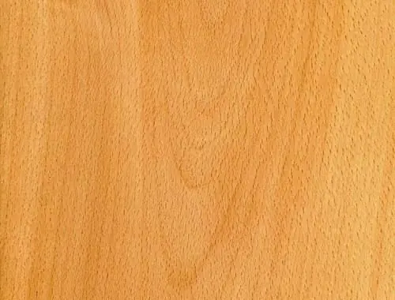
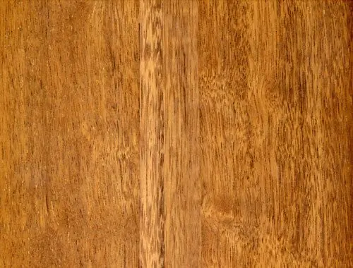
Kaczmarek Schody to firma z Chocza w Wielkopolsce, która projektuje, produkuje i montuje drewniane schody na indywidualne zamówienie. Mamy 15 lat doświadczenia i ponad 1000 realizacji - w całej Polsce i w Niemczech.
Najważniejsze są dla nas jakość, dokładność i solidność pracy. Każde schody powstają pod konkretne wnętrze: od pomiaru, przez wybór drewna i balustrady, po montaż ostatniego stopnia.
Zobacz nasze realizacjeDoradca przyjechał, wszystko pomierzył, a następnie został mi przedstawiony projekt według moich wytycznych. Polecam!
Grażyna Nowicka
Świetna robota, schody po roku użytkowania wyglądają jak nowe. Kontakt z firmą świetny, bardzo sympatyczny właściciel.
Elżbieta Kujawa
Pan Krzysztof świetnie doradził nam co do wyboru odpowiedniego typu schodów oraz rodzaju drewna.
Magdalena Jakubowska
Proszę opisać, jakie schody Państwo planują - oddzwonimy, doradzimy i umówimy pomiar.
Chocz, ul. Zapłocie 17A
Mapa Google zapisuje własne pliki cookies, dlatego wczytujemy ją po zgodzie.Pliki cookiesUżywamy tylko niezbędnych plików cookies. Mapa Google w sekcji kontakt zapisuje własne cookies - włączymy ją, jeśli Państwo się zgodzą. Szczegóły